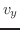
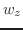
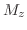
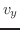
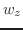
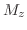

Next: Impedance and Behavior at Up: Miller Puckette Previous: Solutions to the Wave
So far, we have developed an understanding of the propagation of longitudinal and shear waves. These are both categorized as bulk waves, because they require the material to extend for many periods of the wave. Momentarily, we take this opportunity to list some other simple types of vibrations that can travel through objects. Similarly to our treatments of the pure longitudinal and pure shear cases, these wave types will be shown propagating in a single direction. This is only possible if the wave never experiences a change the medium through which it travels. So, the waves also depend on the volumes through which they travel to be infinite and homogeneous in some direction.However these can also be described for wires, bars, or plates, and it will only take a minor conceptual leap to bring them into truly finite volumes. Rather than derive the wave equations for each of these types, a phenomenological account will be given.
Torsional waves are waves that propagate via torque. Torsional waves propagate with a phase velocity identical to that of transverse waves, and may even be considered a form of transverse wave for some volumes. This is because the coefficient of elasticity that governs the stress-strain relationship in torsional waves also does the same in shear waves for some materials. In both cases, the area of a cross-section perpendicular to the axis of propagation remains constant. [7, p. 90]
A wire, bar, or plate, whose thickness is small on the order of a wavelength of interest, may exhibit another type of wave motion, called the quasi-longitudinal wave.[7, p. 80] This type of wave is a form of longitudinal wave motion, except, unlike longitudinal waves, it propagates without bulk compression. Rather, these waves are the propagation of tensile stress, and so while the field variables of this wave are oriented with the propagation vector, these waves occur in incompressible (or nearly incompressible) material. To make room for the longitudinal strain, these waves must also have a small transverse strain component. However, since the rod freely moves in the plane orthogonal to the propagation axis, there can be no stress wave traveling on this plane. The elasticity coefficient that relates stress to strain in quasi-longitudinal waves is Young's modulus, and is typically much smaller than that of the bulk longitudinal motion in the same material. [18, p. 14]
Flexural waves occur in a plate or wire when it bends. These are the waves most closely associated with the radiation of sound in air. Although they appear similar to transverse waves, the equations that govern their motion are completely unique. The description of these waves requires four variables, rather than the familiar two. These variables are the transverse velocity  , angular velocity , the bending moment , and the shear force . These variables are related by a wave equation that looks utterly unlike that of the others--the derivative with respect to the spatial coordinate involves a fourth-order derivative, while the derivative with respect to time is of the usual second order. This means that in general, a linear, distortion-free propagation is impossible. Flexural waves are highly dispersive: their higher frequency components travel with faster phase velocities. [7, p. 95]
, angular velocity , the bending moment , and the shear force . These variables are related by a wave equation that looks utterly unlike that of the others--the derivative with respect to the spatial coordinate involves a fourth-order derivative, while the derivative with respect to time is of the usual second order. This means that in general, a linear, distortion-free propagation is impossible. Flexural waves are highly dispersive: their higher frequency components travel with faster phase velocities. [7, p. 95]
Two other important types of waves, Plate and Surface waves, require a more thorough understanding of boundary conditions. Although these wave motions happen freely as an object vibrates, they are most frequently encountered in waveguides. The mechanics behind such waves will be described briefly in 1.5, and their applications will be described in Chapter 2.
joe 2014-01-09